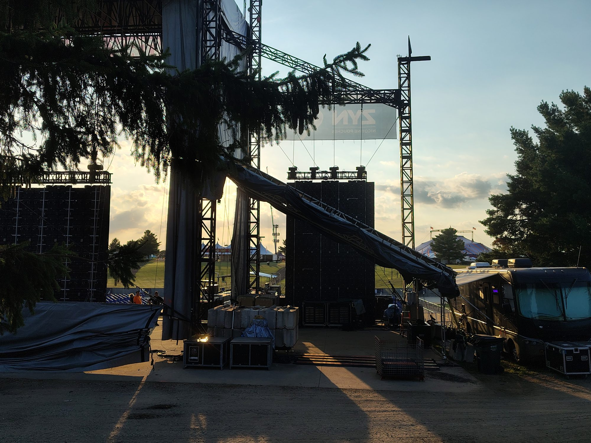
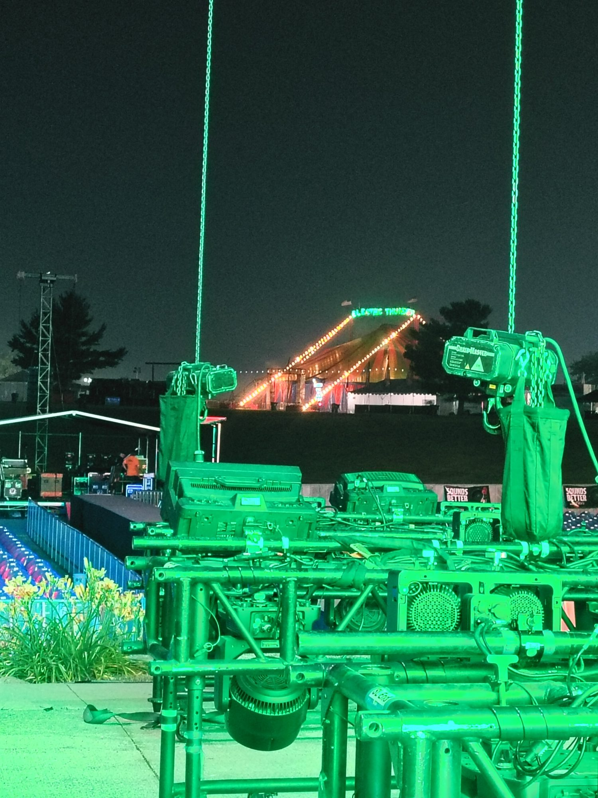

The work is the proof.
This portfolio documents production environments and calls actually worked. The photographs provide context for the scale, systems, and conditions encountered in the field.
Context over decoration.
Each group pairs real field photography with concise information about the work environment. The goal is to help a production contact understand where Deadhang has operated—not to inflate an individual labor role into ownership of the show.
Arena, stadium, and spotlight environments
Experience includes arena and stadium calls, production-floor preparation, assigned spotlight positions, and work around large-format touring systems.


Touring load-ins, scenic, video, and floor systems
Hands-on support around touring production elements, scenic builds, moving video systems, equipment movement, and pre-show production preparation.


Multi-day outdoor production environments
Festival work adds weather, distance, site logistics, long days, multiple departments, changing priorities, and high-volume movement to the normal production call.





Experience is useful when it matches the next call.
For availability, send the event, dates, location, expected role, call schedule, and travel details.
Request Availability